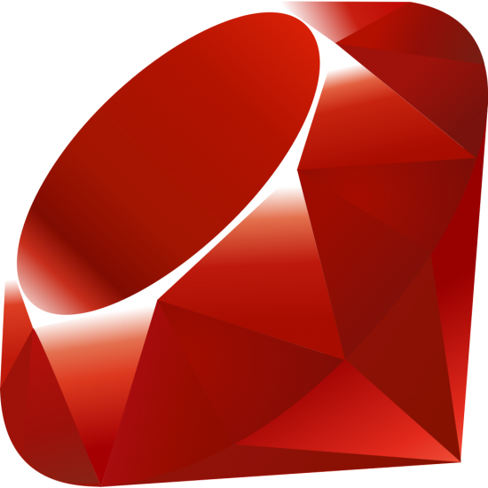
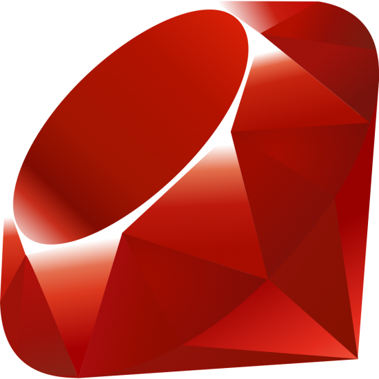

Hi. My name is Vyacheslav Kozlov and I'am a full-stack Ruby-on-rails developer.
Approach
What do I want
My main goal is to translate business idea and business requirements into most suitable application architecture, that solves a real people's problems.
It is not all about programming
If you are a full stack developer, you need more than just a programming language. I need to have an eye for design, to know the basics of psychology, management, marketing and business logic. It allows me to keep the base idea and transform it into a web-service instead of making web app it's endpoint.
I have marketing background and wide range of knowledges and interests that are adjacent to web-development, that you get out of the box.
 
